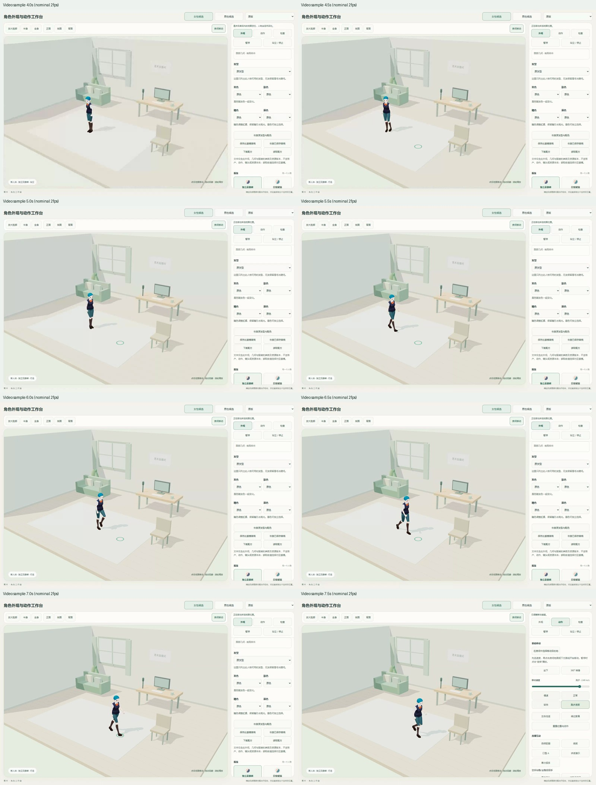
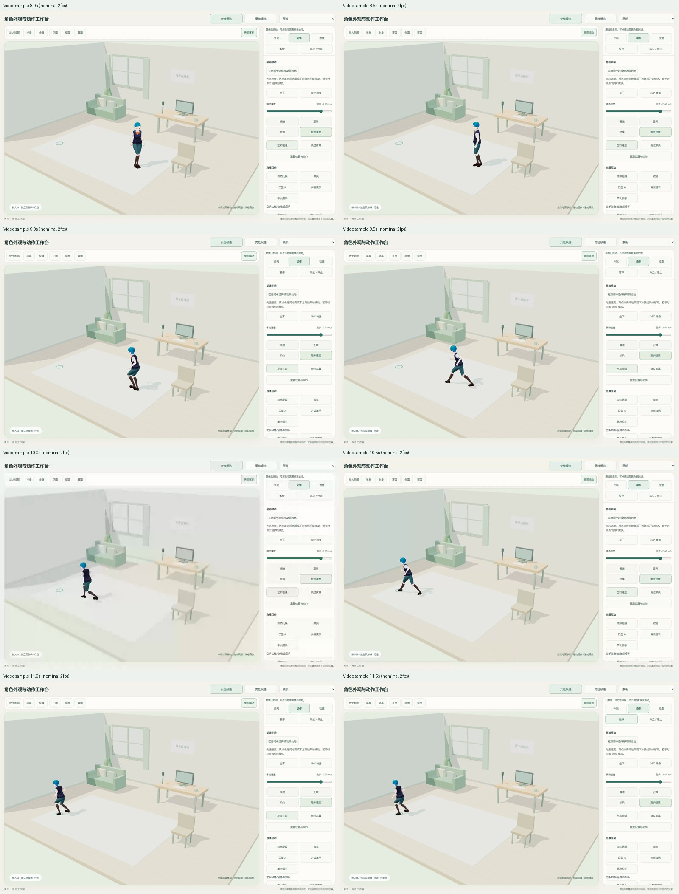
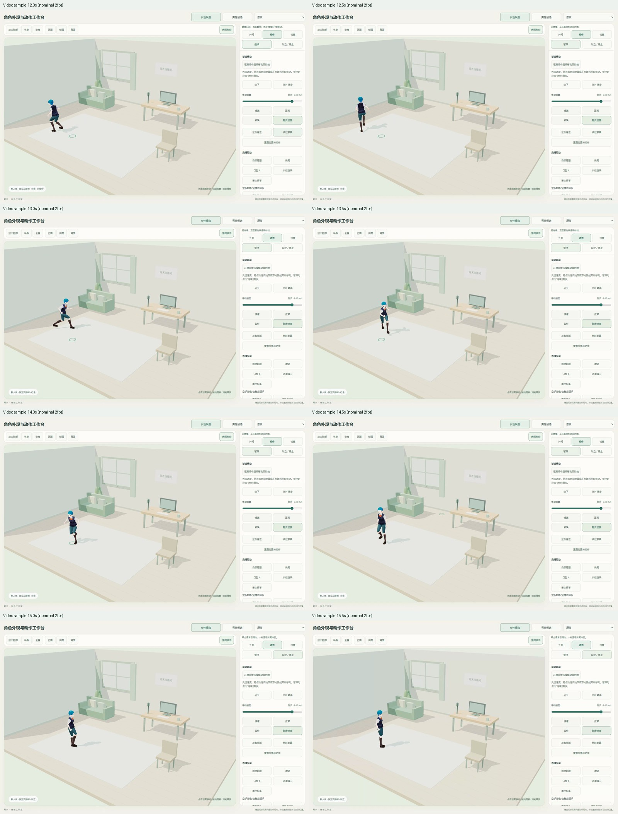
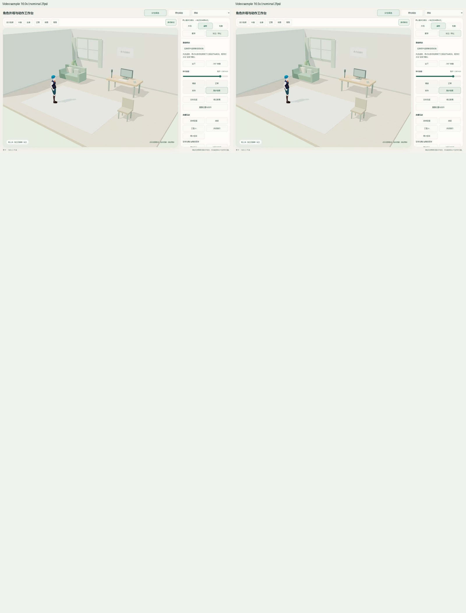

Original native 1× videos; same UI script and viewport. Timing can differ. Use fullscreen for messages. Not ordinary-PC performance or naturalness acceptance.
All 34 samples viewed. Sampling is not continuous human naturalness acceptance. Review and limitations



